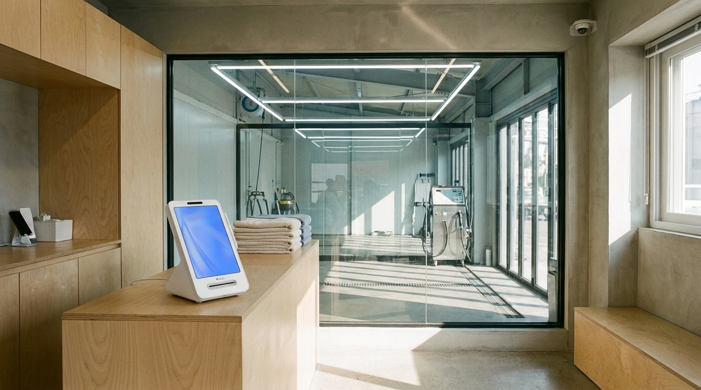
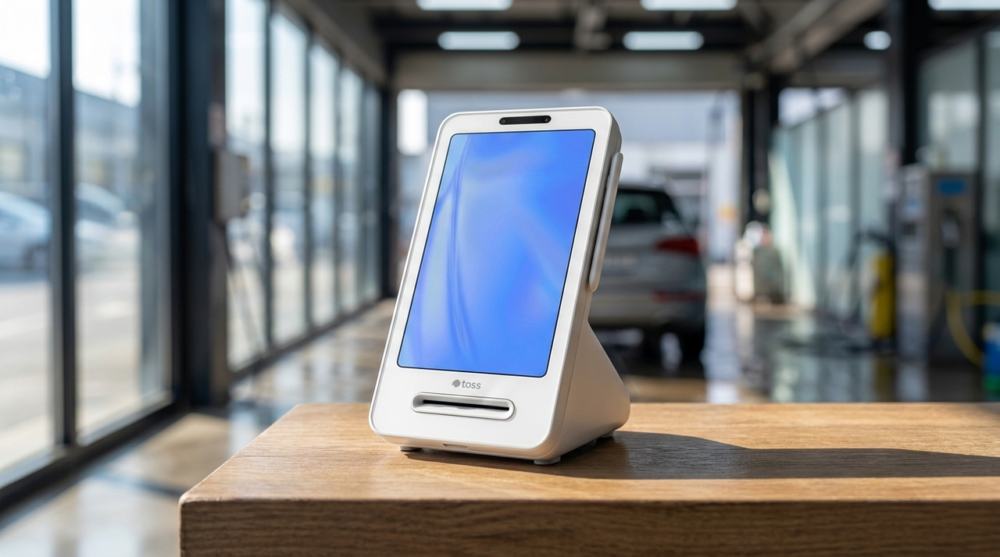

매출을 매일 확인하는 사장님이 마감에서 아끼는 시간
세차장처럼 손님이 몰리는 시간이 뚜렷한 업종은, 하루가 끝나면 오늘 잘된 건지 아닌 건지 감으로 판단하게 됩니다. 그런데 감은 자주 틀립니다. 바빴다고 느낀 날이 실제로는 평소와 비슷하고, 한가했다고 느낀 날이 오히려 나은 경우도 있습니다. 저희가 매장을 다니며 확인한 바로는, 매출을 매일 짧게 확인하시는 사장님과 월말에 한 번 보시는 사장님은 마감에 쓰는 시간부터 달랐습니다. 이 글에서는 매일 확인이 실제로 무엇을 줄여 주는지 정리했습니다.

월말에 몰아서 보면 확인이 아니라 복원이 됩니다
한 달치를 한 번에 열어 보면, 숫자를 보는 것이 아니라 기억을 되살리는 일이 됩니다. 이 건이 무엇이었는지, 왜 취소되었는지, 왜 이 날만 유난히 적은지. 하나씩 떠올리다 보면 시간이 훌쩍 갑니다.
매일 보면 이 과정이 없습니다. 어제 일은 기억이 선명하고, 이상한 건이 있어도 바로 알아봅니다. 확인은 미룰수록 비용이 커지는 종류의 일입니다.
그리고 미룬 만큼 놓치는 것도 생깁니다. 결제 오류나 중복 건은 빨리 발견할수록 처리가 쉽습니다. 한 달이 지나 발견하면 손님도 기억하지 못하고, 절차도 복잡해집니다.
매일 볼 때 실제로 보는 것은 세 가지뿐입니다
매일 확인하라고 하면 부담스럽게 들리지만, 실제로 보는 것은 많지 않습니다. 오늘 총액이 평소와 비슷한지, 시간대 분포가 평소와 비슷한지, 취소나 이상한 건이 있는지. 이 세 가지면 충분합니다.

익숙해지면 1~2분이면 끝납니다. 그리고 이 짧은 확인이 쌓이면 우리 매장의 평소가 무엇인지를 알게 됩니다. 평소를 알면 이상한 날을 바로 알아챕니다. 반대로 평소를 모르면 이상한 날도 그냥 지나갑니다.
세차장은 날씨의 영향을 크게 받습니다. 비 온 다음 날, 미세먼지가 심한 날, 연휴 앞뒤. 이런 패턴이 데이터로 쌓이면 인력 배치나 운영 시간을 정할 때 근거가 됩니다. 감으로 정하던 것을 기록으로 정하게 되는 것입니다.
매일 확인에서 볼 항목
| 확인 항목 | 무엇을 알 수 있나 |
|---|---|
| 오늘 총 매출 | 평소 대비 오늘의 위치 |
| 시간대별 분포 | 인력·운영 시간 조정의 근거 |
| 결제 수단 구성 | 손님층 변화, 정산 흐름 예측 |
| 취소·환불 건 | 문제 조기 발견 |
| 건당 평균 금액 | 어떤 상품이 팔리고 있는지 |
| 요일별 흐름 | 쉬는 날·행사 일정 정하기 |
이 항목들은 한 화면에서 보이면 확인이 습관이 되고, 여러 곳을 열어야 하면 며칠 만에 그만두게 됩니다. 매일 볼 수 있느냐는 의지의 문제가 아니라 화면 구성의 문제입니다.
기록이 쌓이면 판단할 수 있는 것이 늘어납니다
몇 달치가 쌓이면 그때부터 다른 이야기가 가능해집니다. 어느 요일에 쉬는 것이 손실이 적은지, 어느 시간대에 사람을 더 두어야 하는지, 어떤 달에 매출이 떨어지는지. 이런 판단은 기억으로는 할 수 없고 기록으로만 할 수 있습니다.
특히 무인이나 소수 인력으로 운영하는 매장은 이 판단이 곧 비용입니다. 한가한 시간에 사람이 있고 몰리는 시간에 부족하면, 인건비는 나가는데 손님은 기다립니다. 기록이 있으면 이 어긋남을 줄일 수 있습니다.
저희가 상담에서 매출 화면을 함께 보자고 말씀드리는 이유도 여기에 있습니다. 지금 매장에서 무엇이 벌어지고 있는지 모르면, 어떤 구성이 맞는지도 정할 수 없습니다.
확인이 습관이 되면 상담 내용도 달라집니다
저희가 매장에 방문해 상담을 드릴 때, 매출을 매일 보시는 사장님과 그렇지 않은 사장님은 대화 내용이 완전히 다릅니다.
매일 보시는 분은 "저녁 7시대가 유난히 몰리는데 그때 결제가 밀린다"처럼 구체적으로 말씀하십니다. 그러면 저희도 그 시간대를 기준으로 구성을 제안 드릴 수 있습니다. 반대로 기록이 없으면 "그냥 좀 불편하다" 이상으로 이야기가 나아가지 못하고, 결국 일반적인 제안만 드리게 됩니다.
기록은 사장님을 위한 것이기도 하지만, 도움을 받을 때 더 정확한 도움을 받기 위한 것이기도 합니다. 이는 결제기뿐 아니라 인력, 운영 시간, 상품 구성 어디에나 해당합니다.
세차장처럼 날씨와 계절에 따라 매출이 크게 움직이는 업종은 특히 그렇습니다. 작년 이맘때 어땠는지 기록이 있으면 올해를 대비할 수 있고, 없으면 매년 처음처럼 겪게 됩니다. 몇 달만 쌓여도 보이는 것이 생기니, 오늘부터 시작하셔도 늦지 않습니다.
세차장은 현금 손님과 카드 손님의 비중이 계절마다 달라지기도 합니다. 겨울에는 짧게 자주 오시는 손님이 늘고, 봄가을에는 한 번에 오래 쓰시는 손님이 늘어납니다. 이 변화가 결제 수단 구성에서 먼저 보입니다. 매일 짧게 확인하시면 이런 변화를 계절이 다 지나간 뒤가 아니라 진행 중일 때 알아채실 수 있습니다.
자주 묻는 질문
Q. 매출 확인이 어렵지 않을까요?
보는 항목이 정해지면 1~2분이면 끝납니다. 처음에 무엇을 볼지만 정해 두시면 그 뒤로는 습관이 됩니다.
Q. 결제 수단이 여러 개인데 매출을 한 번에 볼 수 있나요?
결제를 한 대에서 받으시면 매출 내역도 한곳에 모입니다. 수단별로 구분해 확인할 수 있어 마감 시간이 줄어듭니다. 화면 구성은 이용하는 서비스에 따라 다를 수 있어 상담 시 매장에 맞게 안내해 드립니다.
Q. 지난 기록도 볼 수 있나요?
이용하시는 서비스에 따라 조회 가능한 기간이 다릅니다. 현재 쓰고 계신 것을 알려 주시면 확인해 드립니다.
Q. 무인으로 운영하는데도 확인이 되나요?
매장에 가지 않고도 확인하실 수 있도록 구성해 드릴 수 있습니다. 운영 방식을 알려 주시면 그에 맞게 안내해 드립니다.
매일 2분이 월말의 두 시간을 대신합니다
마감은 원래 시간이 걸리는 일이 아닙니다. 미뤄 두었기 때문에 오래 걸리는 것입니다. 하루에 짧게 확인하는 습관 하나가 월말의 긴 시간을 없애고, 그렇게 쌓인 기록이 다음 판단의 근거가 됩니다. 지금 마감에 몇 분 쓰고 계신지, 매출을 어디서 확인하고 계신지 알려 주시면 한곳에서 보이도록 정리해 드리겠습니다. 정품 신제품 보증, 수도권 직영 설치로 방문합니다.
- 📞 전화상담 1544-7754
- 🌐 홈페이지 https://nwpos.co.kr

📷 인스타그램 팔로우 https://www.instagram.com/nurinetworkspos

▶️ 유튜브 구독 https://www.youtube.com/@nurinetworks